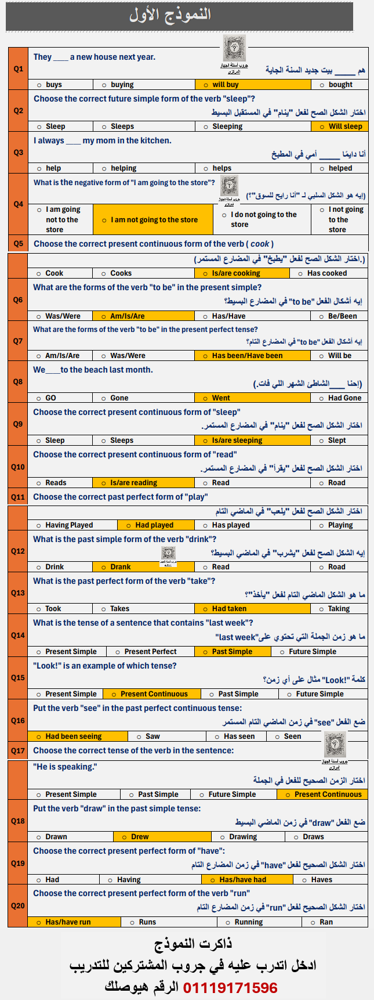

نماذج جروب المشتركين للتدريب
يعني إيه نموذج؟
من خلال تواصلنا المستمر مع الناس اللي بتمتحن في الجهاز المركزي، بنكون
متابعين أول بأول إيه اللي بيحصل في الامتحانات، ونوع الأسئلة وطريقة
صياغتها.
بناءً على ده، بنوفّر أسئلة مهمة جدًا
👥 إحنا أكتر من مسؤول، وكل مسؤول متخصص في مادة معينة، وبيتم:
- تجميع الأسئلة المهمة
- مراجعتها بدقة
- تحديد الإجابة الصحيحة لكل سؤال
بعد كده بنقسم الأسئلة على نماذج تدريبية:
📌 كل نموذج عبارة عن 20 سؤال
✔️ السؤال (صح / غلط أو اختيار من متعدد)
✔️ وتحته الإجابة الصحيحة مباشرة
✔️ السؤال (صح / غلط أو اختيار من متعدد)
✔️ وتحته الإجابة الصحيحة مباشرة
الهدف من النماذج هو إننا ندرب الناس عليها بشكل مستمر، عشان اللي ذاكر ميـنساش ويثبت المعلومة.
وكمان موفرين فيديوهات شرح للحاجات المهمة زي: قواعد اللغة الإنجليزية والعربية، و أساسيات الحاسب، والـ IQ
ده شكل نموذج من:
- نماذج مادة المعلومات العامة
- نماذج مادة الحاسب
- نماذج اللغة الإنجليزية 